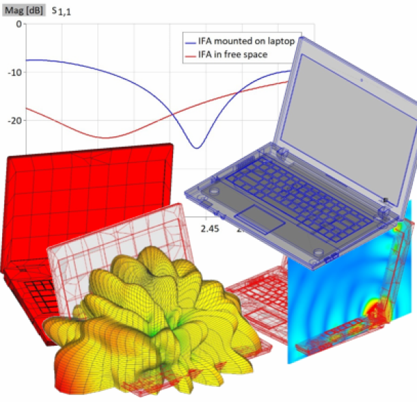

Images from:
https://wipl-d.com/laptop-with-inverted-f-antenna/
https://www.semanticscholar.org/paper/Comparison-study-of-electromagnetic-human-with-2.4-Guterman-Moreira/b4e077c9897fd99a247675d040cff51202e7b847
https://www.usenix.org/conference/woot18/presentation/wakabayashi
https://transientspecialists.com/blogs/blog/bulk-current-injection-bci-test-equipment-methods-information
https://www.nature.com/articles/s44172-022-00014-7
https://www.dww.com/articles/microsoft-obtains-patent-for-use-of-human-body-as-power-and-data-transmitting-medium